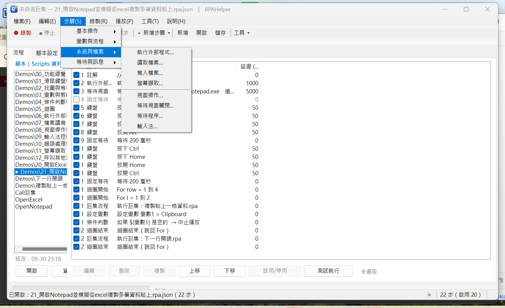

← 回程式設計
← 回影片索引
讓腳本去執行別的程式、
讀寫檔案、抓下畫面
系統與檔案 8 個動作：外部程式的輸出與結束代碼可以直接拿來判斷
2026/10/01・系列 4／5：系統與檔案
這一類是「跟外面的世界打交道」：執行別的程式並拿它的輸出、讀寫檔案、抓畫面、
控制視窗、切輸入法。共 8 個：執行外部程式、讀取檔案、寫入檔案、螢幕擷取、視窗操作、
等待視窗關閉、等待程序、輸入法。

「步驟」選單的「系統與檔案」分類。示範腳本是 06（執行外部程式）、07（檔案讀寫）、11（螢幕擷取）。
執行外部程式：拿它的輸出當下一步的輸入
三種執行方式：不等待（丟出去就繼續）、等待完成、取得輸出。
路徑與參數都可以用變數；輸出與結束代碼都能存進變數，所以「跑完之後根據結果決定下一步」是可行的。
參數用變數代入，同一支腳本就能重複使用；輸出要修掉前後空白可以勾選。
它也可以呼叫 PowerShell 或命令列工具——腳本本身沒有寫程式，但可以借用系統既有的能力。
三個實務設定：
- 結束代碼：非 0 通常代表失敗；可以只靠它判斷成敗，不必解析輸出文字。
- 輸出編碼：拿到亂碼時把它改成正確的編碼（預設跟隨主機命令列）。
- 隱藏視窗：排程執行時不彈出黑窗，畫面比較乾淨。
檔案讀寫與螢幕擷取
讀取檔案把整個檔案讀進變數（可選擇是否修掉前後空白）；
寫入檔案有覆寫與附加模式，自動建立不存在的資料夾，編碼支援 UTF-8 與 Big5。
加上變數與正規式，就能做出「讀一份清單 → 每筆查一次 → 把結果寫成一份報表」這種流程。
螢幕擷取可以全螢幕、自訂區域，或只擷取目標視窗，存成 PNG 或 JPG；
檔名路徑可以用變數組合，加上時間戳記就不會覆蓋前一次——
這對「定時截圖留存」或「失敗時留證據」很有用。
視窗與程序：等到該關的關完
視窗操作包含叫到前景、最大化、最小化、還原、關閉、搬移、置頂，
以及把視窗資訊讀進變數（標題、行程、位置、大小）——讀出來之後可以用正規式再解析。
等待視窗關閉與等待程序是兩個很常被忽略、但能救命的動作：
例如「等 Excel 完全關閉」再繼續，否則下一步會找到一個正在關閉的視窗。
輸入法可以讀取目前狀態、切換中／英模式、切到指定輸入法。
打字前先切成英文，可以避免中文輸入法攔截按鍵；查詢系統有哪些輸入法可以用命令列
--ime-status。要注意輸入法狀態是每個視窗各自的，少數程式不支援控制。
把腳本當積木：呼叫其他巨集
示範腳本 12 講的是子流程與參數共用：把「複製貼上一格資料」「下一行開頭」這種動作抽成子巨集，
主流程只負責組織。子巨集有它自己的重複次數、速度與目標視窗，路徑存成相對於 Scripts 資料夾，
整包複製到別台電腦也能用。
循環引用會被擋下來：巨集引用有深度上限，互相呼叫的錯誤會直接停止播放並回報，
不會無限遞迴把電腦卡死。
影片：這一類的優點在畫面上看得到
看不方便的話，也可以 直接在 YouTube 看。這支是 RPAHelper 的實際執行錄影：畫面上同時看得到動作清單，播放後由程式自己跑完，全程沒有人碰鍵盤滑鼠。
對應的示範腳本（工具內建）：06 執行外部程式、07 檔案讀寫、11 螢幕擷取。 每支都用註解步驟寫清楚在做什麼，可以開啟來對照本文。
本文是工具實作與流程的記錄，不構成任何軟體或服務的推薦。
頁面上的畫面都是實際操作時擷取，未經合成。